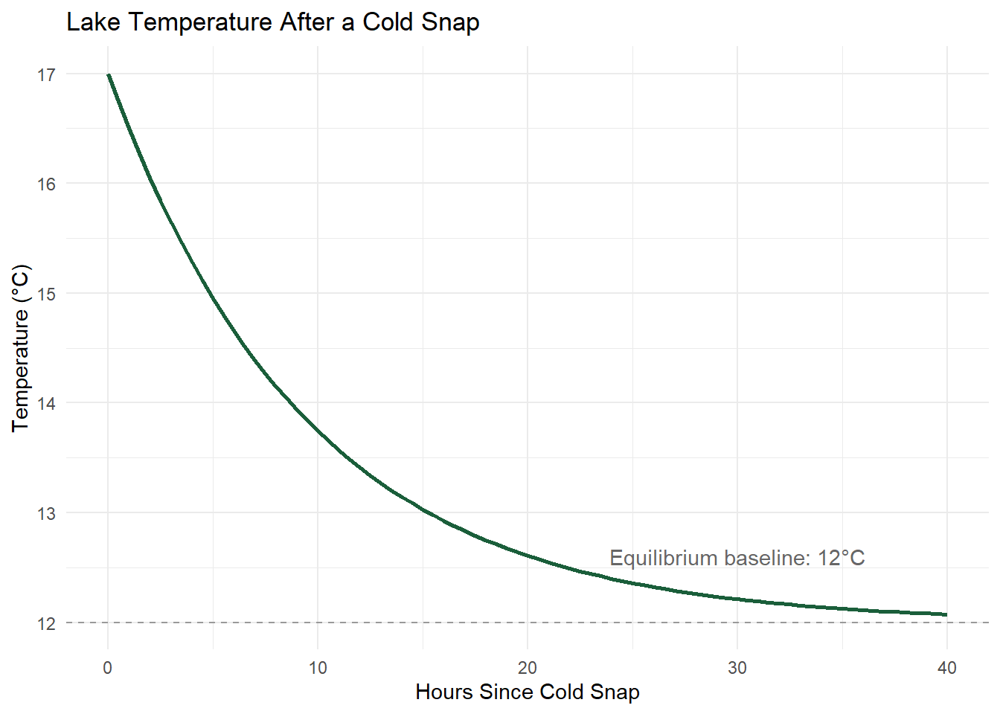

Chapter 7 Exponential Functions and Logarithms
7.1 Learning Objectives
By the end of this chapter, you will be able to:
- Model growth and decay using exponential functions.
- Apply the definition and properties of logarithms.
- Solve exponential and logarithmic equations.
- Shift, dilate, and reflect exponential and logarithmic graphs.
7.2 Exponential Growth & Decay
An exponential function has the form
\[ f(t) = a \cdot b^t \]
where \(a\) is the initial value (at \(t=0\)) and \(b\) is the growth factor — the multiplier applied each time \(t\) increases by 1. If \(b>1\), the quantity grows; if \(0<b<1\), it decays. This is fundamentally different from a linear function: a linear function adds the same amount each step, while an exponential function multiplies by the same factor each step.
Adding vs. Multiplying
A population grows by 20 individuals every year. A different population grows by 5% every year. Both start at 400. Which one do you expect to be larger after 30 years, and why — before doing any calculation?
7.2.1 Worked Example: Population Growth
An invasive plant population is measured at 400 individuals, growing by 8% per year.
Step 1 — Identify \(a\) and \(b\). \(a = 400\). Growing by 8% means each year’s population is \(100\% + 8\% = 108\%\) of the previous year’s, so \(b = 1.08\).
Step 2 — Write the model.
\[ N(t) = 400(1.08)^t \]
Step 3 — Evaluate at \(t=10\) years.
\[ N(10) = 400(1.08)^{10} \approx 400(2.159) \approx 863.7 \]
Step 4 — Interpret. The model predicts the population will roughly double (to about 864) after 10 years of unchecked 8% annual growth.
7.2.2 Worked Example: Radioactive Decay and Half-Life
A radioactive tracer has a half-life of 8 days — meaning its activity is cut in half every 8 days, regardless of the starting amount. If the initial activity is 100 units:
Step 1 — Express the decay factor per half-life period. Every 8 days, the amount is multiplied by \(\frac{1}{2}\).
Step 2 — Write the model using \(t\) in days.
\[ A(t) = 100\left(\frac{1}{2}\right)^{t/8} \]
Notice the exponent is \(t/8\), not \(t\) — this counts how many half-lives have elapsed, so that every time \(t\) increases by 8, the exponent increases by exactly 1 (one more halving).
Step 3 — Evaluate at \(t = 24\) days (three half-lives).
\[ A(24) = 100\left(\frac{1}{2}\right)^{24/8} = 100\left(\frac{1}{2}\right)^3 = 100 \cdot \frac{1}{8} = 12.5 \]
Step 4 — Interpret. After 24 days (three half-lives), only 12.5 of the original 100 units of activity remain.
Concept Check: Growth vs. Decay
1. A pollutant concentration is modeled by \(C(t) = 50(0.85)^t\). Is this growth or decay, and by what percentage does it change each period?
Click to reveal answer
Decay, since \(0 < 0.85 < 1\). The concentration decreases by \(15\%\) each period (since \(1 - 0.85 = 0.15\)).
2. If a population model has growth factor \(b = 1.03\), what percentage growth rate does that represent?
Click to reveal answer
3% per period, since \(b = 1 + 0.03\).
7.3 Logarithms
A logarithm answers the question: “to what power must I raise the base to get this number?” Formally:
\[ \log_b(x) = y \iff b^y = x \]
Logarithms are the inverse of exponential functions — exactly in the sense of Chapter 5. If \(f(x) = b^x\), then \(f^{-1}(x) = \log_b(x)\).
Key properties:
\[ \log_b(xy) = \log_b(x) + \log_b(y) \qquad \text{(product rule)} \] \[ \log_b\left(\frac{x}{y}\right) = \log_b(x) - \log_b(y) \qquad \text{(quotient rule)} \] \[ \log_b(x^n) = n\log_b(x) \qquad \text{(power rule)} \]
7.3.1 Worked Example: The pH Scale
pH is defined as \(\text{pH} = -\log_{10}[\text{H}^+]\), where \([\text{H}^+]\) is hydrogen ion concentration in moles per liter. This logarithmic definition is why pH is described on a “scale” rather than a linear measurement.
A water sample has \([\text{H}^+] = 1 \times 10^{-6}\) mol/L.
Step 1 — Substitute into the definition.
\[ \text{pH} = -\log_{10}(1\times10^{-6}) \]
Step 2 — Use the power rule. Since \(\log_{10}(10^{-6}) = -6\):
\[ \text{pH} = -(-6) = 6 \]
Step 3 — Interpret a one-unit change. A sample with pH 5 has \([\text{H}^+] = 10^{-5}\) mol/L — ten times the hydrogen ion concentration of the pH-6 sample above, not just “one more” unit of acidity. Every single step down the pH scale represents a tenfold increase in acidity, which is exactly what makes logarithmic scales powerful for compressing a huge range of values into a manageable number line.
Concept Check: Log Properties & Graph Transformations
1. Simplify \(\log_2(8) + \log_2(4)\) using the product rule, then check by combining first.
Click to reveal answer
\(\log_2(8) = 3\), \(\log_2(4)=2\), sum \(=5\). Check: \(\log_2(8\cdot4) = \log_2(32) = 5\) ✓.
2. A pH 8 lake and a pH 6 stream are compared. How many times more acidic (in terms of \([\text{H}^+]\)) is the stream than the lake?
Click to reveal answer
The difference is 2 pH units, and each unit is a factor of 10, so the stream is \(10^2 = 100\) times more acidic than the lake.
7.4 Shifting, Dilation, and Reflection
Just as with the graphs you started reading in Chapter 3, exponential and logarithmic graphs can be shifted, stretched, or flipped. For a general exponential \(f(t) = a\cdot b^{t}\), adding a constant shifts the graph vertically — this matters environmentally because it represents a baseline that a quantity decays toward (or grows from), rather than decaying all the way to zero.
7.4.1 Worked Example: Decay Toward a Nonzero Baseline
A lake’s temperature after a cold snap doesn’t decay toward 0°C — it decays toward the ambient equilibrium temperature. Suppose:
\[ T(t) = 5(0.9)^t + 12 \]
where \(t\) is hours after the cold snap and \(T\) is temperature in °C.

Figure 7.1: Lake temperature decaying toward a nonzero equilibrium baseline of 12 degrees C.
As \(t\) grows large, \((0.9)^t\) shrinks toward 0, so \(T(t)\) approaches \(12\)°C — the added constant is a vertical shift that sets the baseline the decay approaches, rather than the value it decays to zero from.
7.5 Practice: Half-Life / Decay-Rate Case Study
7.5.1 What Are You Practicing?
Building exponential growth/decay models from a described rate or half-life, evaluating them, and using logarithms to solve for an unknown exponent (time).
7.5.2 How to Approach These Problems
- Identify whether the scenario describes growth or decay, and find the growth/decay factor \(b\).
- Write the model \(f(t) = a\cdot b^t\) (adjusting the exponent for a stated half-life or doubling time, as needed).
- To solve for time given a target value, isolate the exponential term and apply a logarithm to both sides.
7.5.3 Practice Problems
1. A contaminant has a half-life of 5 years. Starting from 80 units, how much remains after 15 years?
Click to reveal solution
\(A(t) = 80\left(\frac12\right)^{t/5}\). At \(t=15\): \(A(15) = 80\left(\frac12\right)^3 = 80\cdot\frac18 = 10\) units.
2. A population growing as \(N(t) = 200(1.05)^t\) is predicted to reach 400 (double) at some time \(t\). Set up the equation you’d need to solve, and explain (in words) what tool from this chapter you’d need to solve it for \(t\), given that \(t\) is currently in the exponent.
Click to reveal solution
Equation: \(400 = 200(1.05)^t \Rightarrow 2 = (1.05)^t\). Since \(t\) is trapped in the exponent, you need to take a logarithm of both sides to bring it down: \(t = \log_{1.05}(2)\), which a calculator can evaluate (\(\approx 14.2\) years).